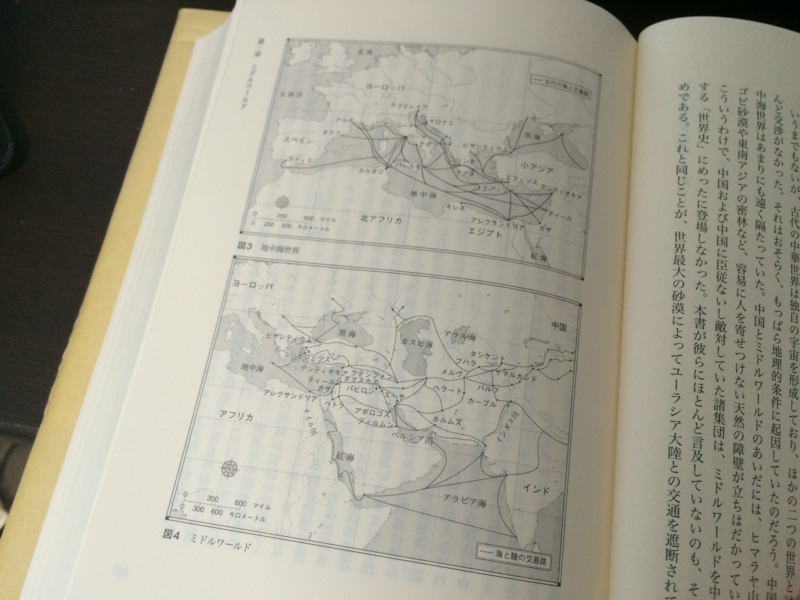

『イスラームから見た「世界史」』
公開日：

- 作者: タミム・アンサーリー,小沢千重子
- 出版社/メーカー: 紀伊國屋書店
- 発売日: 2011/08/29
- メディア: 単行本
- 購入: 3人 クリック: 29回
- この商品を含むブログ (5件) を見る
結論から言うと、とてもよい本だと思った。お勧め。
イスラムについては新書レベルだけど何冊か読んでいたにもかかわらず、どうもモヤモヤして実体がつかめていない感じがしていた。ムスリムの知り合いもいないことはないけれど、なぜそんなにアメリカが嫌いなのかとか（ちなみにパキスタンのひとだ）、腑に落ちないところが少なくなかった。
けれど、この本のおかげで、これまでバラバラに蓄えられていた知識に一本の糸が通ったように感じられる。頭の中で整理されて、誰かに説明できる物語になった。筆者はアフガニスタン出身、米国在住の作家で、別にムスリムを代表する人ではない。本書の内容も“ミドルワールド”（後述）が中心で、インドネシアやウィグルのムスリムにはまったく触れられていない。その点は網羅性や中立性に欠けるところがあるかもしれない。書名も厳密に言うなら『とあるムスリムから見た「世界史」』とでも名付けるべきだったかも。でも、多様なモノの見方というのは、一つのモノの見方を身に着けてから手を出すもの――でないと、いろんな見方の中で溺れてしまうだろう――だと思う。その一つのモノの見方として、本書は十分信頼のおけるもののように感じる。
話はまず、“ミドルワールド”から始まる。“ミドルワールド”は本書独自の述語で、北アフリカ・中東・イラン（ペルシア）・中央アジア・インドあたりを指す。つまりは近代までに――そして今も――ムスリムが活躍した世界だ。

地中海世界と、“ミドルワールド”。“ミドルワールド”の地図は何度も見たはずなのに、なぜか地中海世界と見比べることがなかった。こうしてみると、ムスリムが活躍した“ミドルワールド”は、地中海世界・中華世界（東アジア）と並んで“世界の三分の一”に数えられるべき規模をもつことが実感できる（ちなみに本書では中華世界に関する記述がほぼ皆無だ。おそらく著者にとって未知の世界だからだろう）。地中海世界はルネッサンス期あたりから北のフランドル・北海航路の比重が増し、内陸交通の重要性が高まると、中心が“地中海”でなくなり、近世ヨーロッパ世界へと成長していく。“ミドルワールド”はイスラム誕生のアラブから、文化的先進地域であるペルシアや、軍事的に優勢であったトルコへと重心を移しつつ、インド・東南アジア・中央アジアへと広がっていく。
地中海世界（ヨーロッパ）の世界史を10章に分けると、こんな感じになる。
- 文明の誕生：エジプトとメソポタミア
- 古典時代：ギリシアとローマ
- 中世：キリスト教の興隆
- 再生：ルネサンスと宗教改革
- 啓蒙時代：探検と科学
- 革命の時代：民主革命・産業革命・技術革命
- 国民国家の出現：覇権をめぐる闘争
- 第一次世界大戦と第二次世界大戦
- 冷戦
- 民主的な資本主義の勝利
僕らが学ぶ世界史でもお馴染の章立てだ。一方、ミドルワールドを中心とすればこんな感じになる。
- 文明の誕生：エジプトとメソポタミア
- イスラームの誕生
- カリフの時代：普遍的な統一国家の追求
- 分裂：スルタンによる統治の時代
- 災厄：（十字軍と）モンゴル
- 再生：三大帝国の時代
- 西方世界の東方世界への浸透
- 改革運動
- 世俗的近代主義者の勝利
- イスラーム主義者の抵抗
6章までは世界史の教科書にも載っていてある程度の紙幅が割かれていけれど、それ以降はサラッと人名が出てくるぐらいで、欧米の帝国主義に蹂躙された地域の一つといった扱いになる。
個人的な印象を述べれば、イスラムは生まれた時から完成しすぎていたように思う。イスラムは単なる宗教ではなく、本書によれば西欧文明や中華文明と並べて語るべき“文明”だった。自分なら「共産主義に似ている」と書くと思う。たった一つの神を信じるのと、神をまったく信じないのは、実は紙一重の差だ（洒落じゃないで！）。
イスラムは、小さなイザコザを解決する枠組みだった。唯一の神を信じ、それから導き出された普遍的な道徳を守って生きる小さな世界。この“イスラムの家”と呼ばれる世界を創り・維持していこうというのがイスラム教だった。
そしてそれには、“イスラムの家”を広げ、その外の世界（“戦争の家”と呼ばれる）をなくしていこうという運動が伴う。その運動は、精神的なものも暴力的なものも含めて“ジハード”と呼ばれる（これは自分の解釈）。
そして建設されるのが、普遍的な統一国家（ウンマ）だ。これはイスラムの創設期、カリフの時代まではそれがある程度成功していた（シーア派の人はちょっと違う解釈をするかもしれない）。ムスリムからすれば、理想の時代と言えるだろう。
なので、モンゴルに蹂躙された時や欧米の列強に抑圧されるたときは、かならず「あの理想的な時代に帰ろう！」という運動が起きる。それが内面的・精神的なものであれば、堕落を廃して古きよき習わしを復古させようという保守反動や原理主義として現れるし、武力的なものであれば“イスラムの家”から戦争を放逐するための対外戦争や、“イスラムの家”に悪徳を持ち込もうとする外敵を排除するテロリズムになるだろう。
もしイスラムにキリスト教のような教会があり、それが堕落していれば、それに対するアンチテーゼとしてルネッサンスや宗教改革が起こりえただろう。しかし、イスラムには教会はない。ひたすらイスラムに対する学識を深め、人々の尊敬を集めるウラマーがあるだけだ。ウラマーとは中華世界で言うところの“士大夫”だが、もっともっと純粋で強力な存在だ。士大夫は儒教・史学を修め、政治・文化に貢献したが、プライベートでは老荘を嗜むことがあったし、異民族の支配下でその文化を受容することもあった。しかし、ウラマーはウラマーによってのみ見いだされる存在で、ときの支配者に助言すれども媚びず、異民族は逆に呑みこんで教化した。故に、西洋文化に徹底的な敗北を喫するまでは無謬の存在であり、絶対の信頼を勝ち得ていた。
確かに、彼らのおかげでイスラムは維持されていた。けれど、逆に言えば、彼らのせいでイスラム世界の時間の針は止まっている。しょうもない例で言えば、日本で固定回線の品質が良すぎたせいで携帯電話の普及が発展途上国よりむしろ遅れた、みたいな。この点は、イスラム世界が克服すべき課題と言えるのだろう。
もう一つの課題は、近代化の過程でムスリムは宗教以外に国家的一体感を得る機会が得られなかったということだと思う。
たとえば日本の場合、明治維新は下級武士のやったことだった。しかし、そのあとの日清・日露戦争は全国民を巻き込んだ一大歴史的イベントだった。すべての国民が貧困に耐えて近代化と軍備増強を行い、確率の低い低い博打に有り金全部をつぎ込んで見事成功させるという古今稀な体験を共有することができた（それをはき違えて“大東亜戦争”をやってしまったということろもあると思う）。だから、当時の国民には「近代日本のオーナーである」という明確で共通の意識と自負があったろう。だから、近代的な価値観を不十分ながらも“普遍的”な価値観として吸収することができた。
しかし、イスラム世界では不幸にもそういった体験がなかった。確かにアラブ世界では原油のおかげで近代化を進めることができたが、それはあくまでもオイルマネーをポケットに入れることのできる限られた人間のすることであって、それ以外の人間には関係がない。キラキラした高層ビル群の隣には、昔ながらの生活を送る土の家が散在していて、そこには選挙や市場はあっても、ほんとうの民主主義と資本主義はない。昔ながらの封建的恩義にもとづく権力者の選出と、相互贈与に毛の生えた取引があるだけだ。つまり、近代が底辺にまで行きわたっていない。ムスリムの人たちが本当に西洋的な“普遍的”価値観を消化し、イスラム的な“普遍”に取り込むのは並大抵の困難ではないだろう。
こうした問題の解決には、たぶん思った以上に時間がかかると思う。そしてそれは彼らの問題だ。人の家に勝手に土足であがりこんで、必要のないものを押し付けてくる友人など有難迷惑だろう。“戦争の家”に住む僕らとしては、近代的な選挙を押し付けたり、治安維持を名目に軍隊を送ったりといった余計な手出しなどせず、彼らが彼ら自身で新しい答えを見つけ出すのを見守るべきなのかもしれない。そんな気がした。